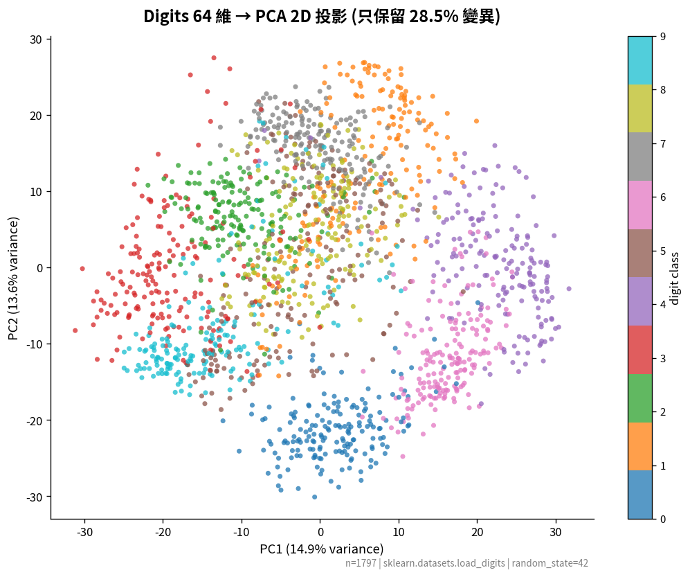
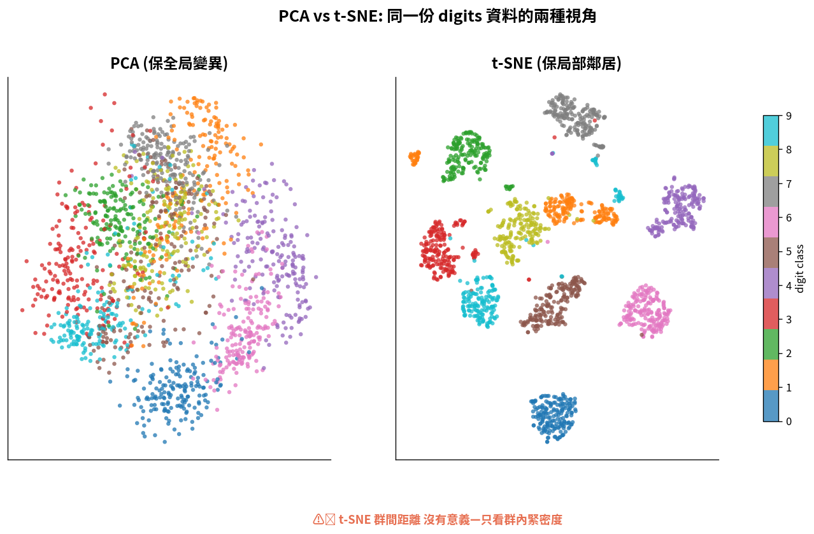
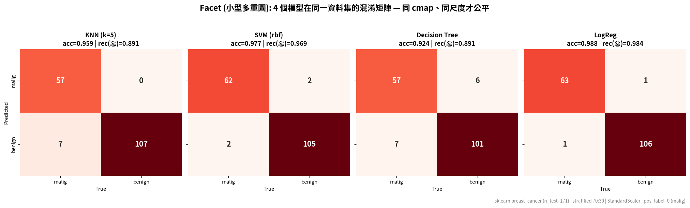
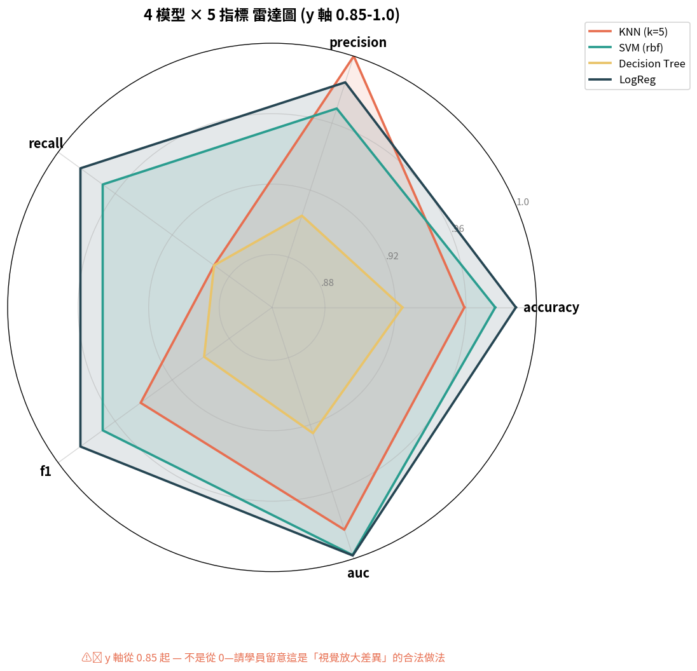

| Step | 思考 | 估算 |
|---|---|---|
| 見 | 兩兩組合幾種? | C(50, 2) = 1,225 |
| 見 | 每張圖看 30 秒 | 1,225 × 30 = 10 小時 |
| 識 | 三維互動呢? | C(50, 3) = 19,600,沒救 |
| 識 | 解法是什麼? | 不是看更多圖, 是換投影方式 |
| 謀 | PCA / t-SNE 把 50 維壓成 2 維,再看 1 張圖 | 用降維 |
| 斷 | 取捨:壓縮會丟資訊,但能看到全局結構 | 接受不完美 |
(a) 降維三派 — 保什麼決定怎麼選
| 方法 | 保什麼 | sklearn API | 何時用 |
|---|---|---|---|
| PCA | 保全局變異 | PCA(n_components=2) | 線性關係、看主要變異方向 |
| t-SNE | 保局部鄰居 | TSNE(n_components=2, perplexity=30) | 看群聚結構,不要相信距離 |
| UMAP | 保拓樸結構 | umap.UMAP() (需另裝) | 大資料、需要可重現 |
(b) 小型多重圖 (Small Multiples) — Tufte: "A powerful and underused technique"
情境:比較 KNN / SVM / 決策樹 / 線性回歸 4 個模型的混淆矩陣。
plt.subplots(1, 4, sharey=True) 並排 4 個 confusion matrix, 用同一個 colormap、同一個 scalesharey=True + 同 cmap 是「讓比較公平」的工程紀律。
(c) 長寬資料 melt / pivot — seaborn 多類別圖的鑰匙
| 格式 | 形狀 | 誰愛用 |
|---|---|---|
| 寬格式 (wide) | 每個指標一欄(如:KNN, accuracy 0.92) | 人類習慣;報表給人看 |
| 長格式 (long) | (模型, metric, value) 三欄 | seaborn 多類別圖必須長格式 |
跟著 W16_demo_pca_tsne_cells.py 逐 cell 跑。本週的「四個必畫」進階版:
| Cell | 內容 | 關鍵 API |
|---|---|---|
| Cell 1 | PCA 2D 投影 (digits 64→2) | sklearn.decomposition.PCA |
| Cell 2 | PCA vs t-SNE 並排比較 | sklearn.manifold.TSNE |
| Cell 3 | 4 模型混淆矩陣 facet | plt.subplots(1, 4, sharey=True) |
| Cell 4 | 多模型多指標雷達圖 | polar projection + plt.fill |
實際成品見下一頁圖庫。
學生會在 Prompt #2 才意識到「沒做特徵縮放」——這是前 14 週講過的點, 這裡剛好複習。
以下 4 張圖由 W16_demo_pca_tsne_cells.py 跑出, 對應 digits (64 維) 與 breast_cancer (30 維) 兩份資料。



recall(惡) 差距才是關鍵——FN 多 = 漏判惡性多。
facet 是「讓多張圖共享尺度」, 雷達圖是「讓多個指標共享一張圖」。 兩者解的問題對稱:前者是「多個物件 × 一個指標」, 後者是「一個物件 × 多個指標」。
以剛才 4 模型比較為例, 寫出一段「成本/效益」型的 SCQA:
| 階段 | 你的敘事 |
|---|---|
| S 情境 | 我們訓練了 4 個模型, accuracy 都在 0.95+ |
| C 衝突 | 但 SVM 雖然最準, 訓練時間是 KNN 的 7.5 倍 |
| Q 問題 | 部署到 edge device 時, 這個成本能接受嗎? |
| A 答案 | 推薦 KNN:accuracy 只少 2%, 但速度快 7.5 倍 |
這正是工程思維而非科展思維:成本/效益, 而不是「我選 accuracy 最高的」。